A pergola on its own is just a structure, posts, beams, open air overhead.
What turns it into an actual outdoor room is a layer of decisions most people don't think about until after it's already built: seating, weatherproofing, and whether to call a professional.
This covers that layer.


1. Keeping It Looking Fresh
A yearly check of the wood finish, hardware, and any fabric elements catches small issues before they turn into expensive repairs.
Swapping cushions, textiles, and small decor seasonally keeps the space feeling current without touching the structure itself.
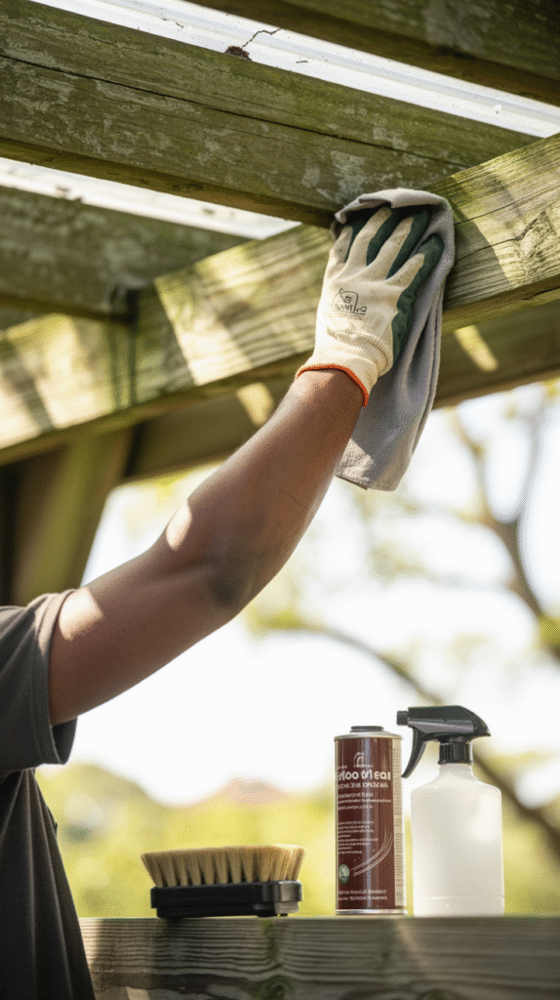
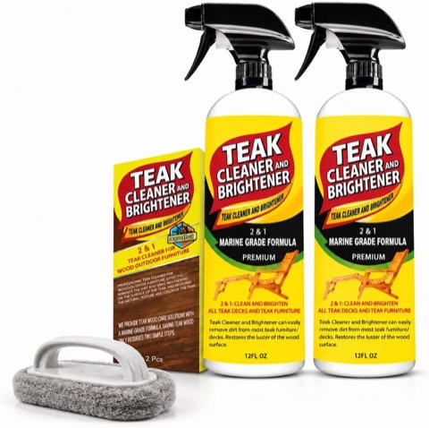
Teak Cleaner and Brightener for Outdoor Furniture and Boat Decks, 2 Pack
Shop on Amazon2. DIY or Hire a Pro?
A simple kit-based pergola is a genuinely approachable DIY project for anyone comfortable with basic carpentry and a free weekend.
A custom size, a structure attached to the house, or a larger span is where hiring a professional becomes worth the cost. The structural stakes go up, and mistakes get expensive to fix after the fact.
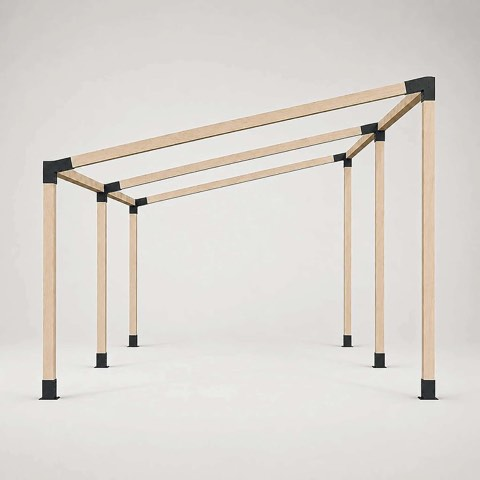
JEXALINE Heavy Duty Pergola Kit with Slanted Roof Brackets, for 4 x 4 Lumber
Shop on Amazon3. Weatherproofing It Properly
A sealed or weather-rated finish on the wood, paired with weather-resistant cushions and textiles, keeps the space usable and good-looking well beyond the first season.
This is the detail most likely to get skipped in favor of styling, and the one that actually determines whether the space still looks good a year later.
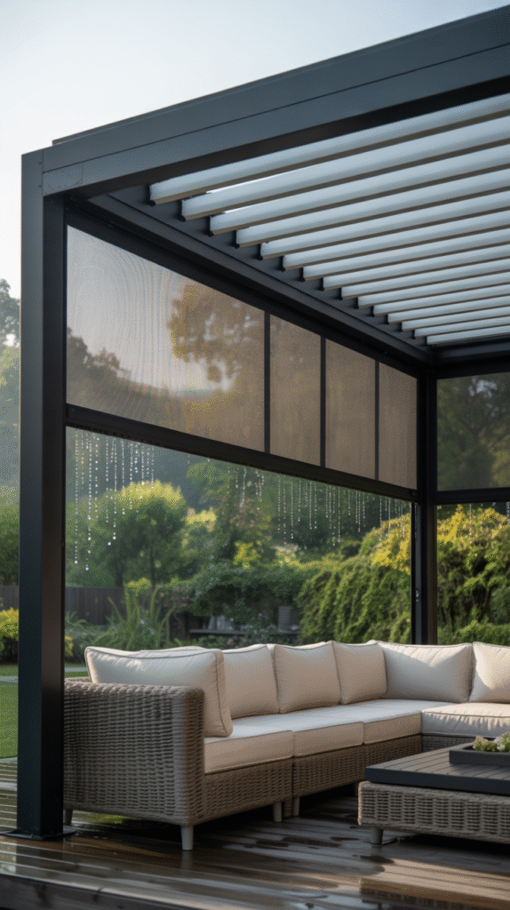
4. Getting the Seating Right
Deep, cushioned seating reads as genuinely lounge-worthy in a way a few hard chairs never will, no matter how nice the structure overhead looks.
Arranging seating to face inward, toward a shared center rather than all pointing the same direction, makes the space feel more like a room meant for actual conversation.
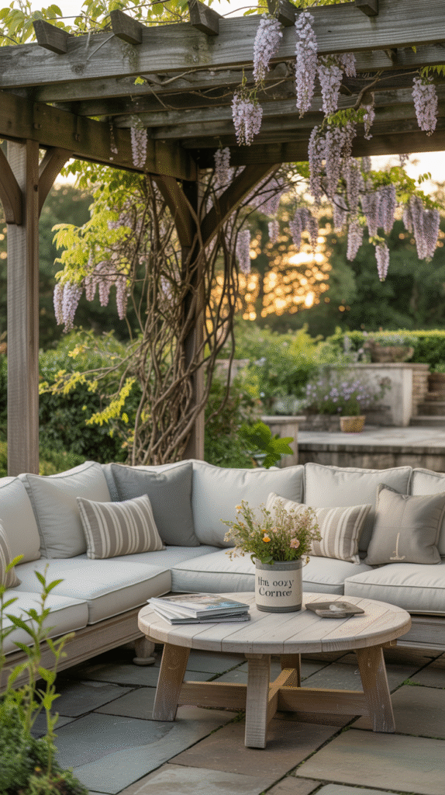
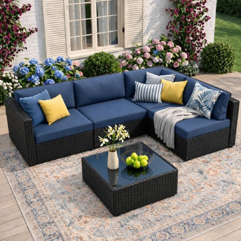
JAMFLY 5-Piece Wicker Patio Sectional Sofa Set with Thick Cushions and Coffee Table
Shop on Amazon
5. Layering in Coziness
Warm lighting, outdoor curtains, and a few textiles do most of the work turning a bare structure into an inviting space. The exact items matter less than making sure all three layers actually show up.
A rug underfoot, even outdoors, adds a surprising amount of warmth and helps visually define the space as a room rather than an open structure.
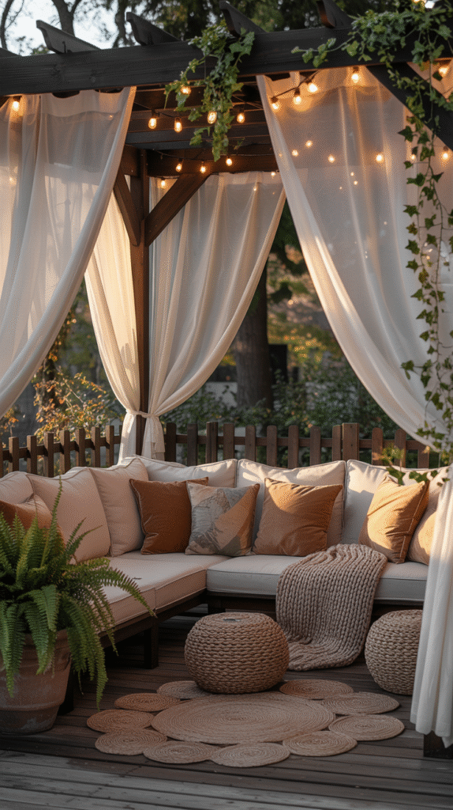
Advanced Wood Stain and Sealer, Redwood, 1 Gallon, Waterproof
Shop on AmazonOutdoor Cushion Covers, 8 Pcs, Stretch Patio Furniture Slipcovers
Shop on Amazon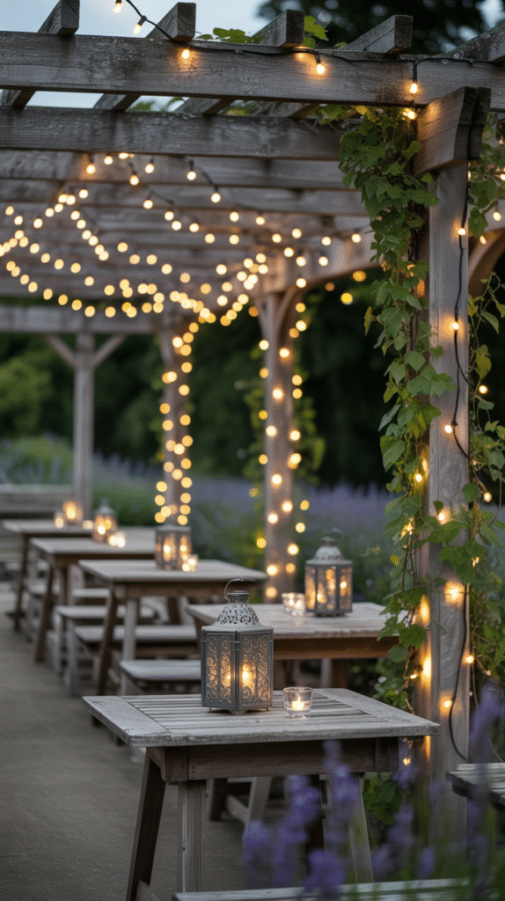
JEXALINE Heavy Duty Pergola Kit with Slanted Roof Brackets, for 4 x 4 Lumber
Shop on AmazonBLACK+DECKER 20V MAX Cordless Drill Driver Kit with Bit Set and Sockets
Shop on Amazon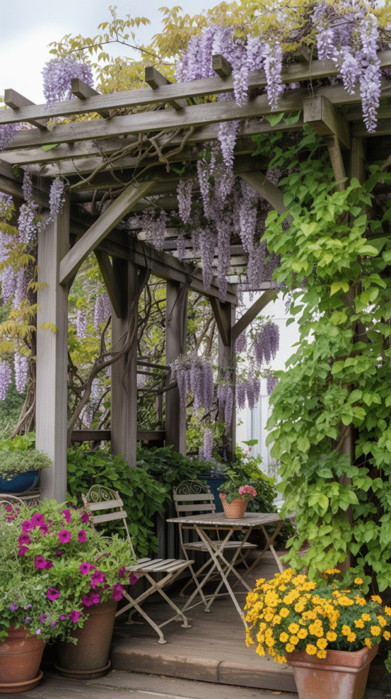
6. Picking the Right Pergola for the Space
An attached pergola, built off the house, suits a yard that wants seamless indoor-outdoor flow. A freestanding one works better as its own destination further out in the yard.
Material and style should match the home's existing architecture, since a sleek metal frame reads very differently than a classic wood structure, even at identical dimensions.
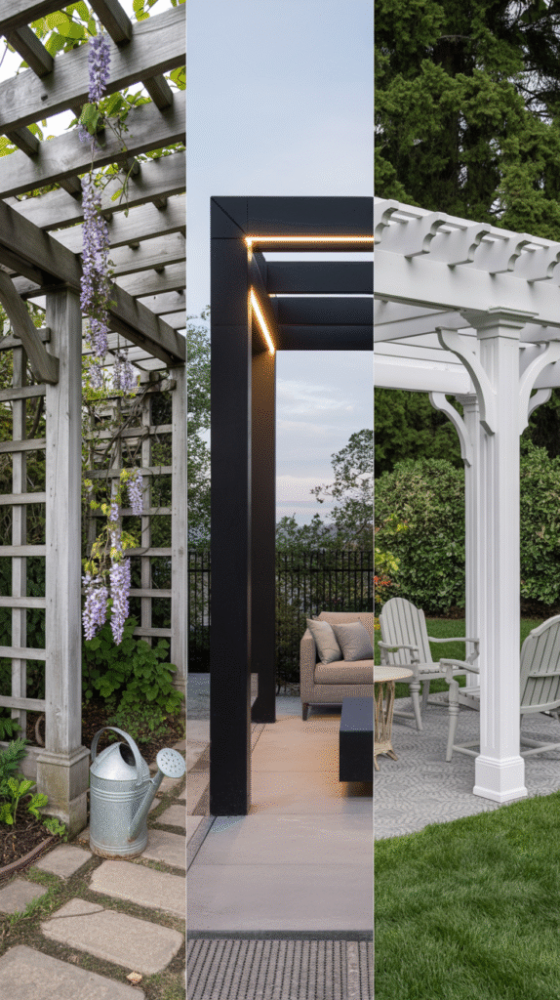
Waterproof Outdoor Curtains for Patio, 6 Drape Panels, Sun Shade
Shop on Amazon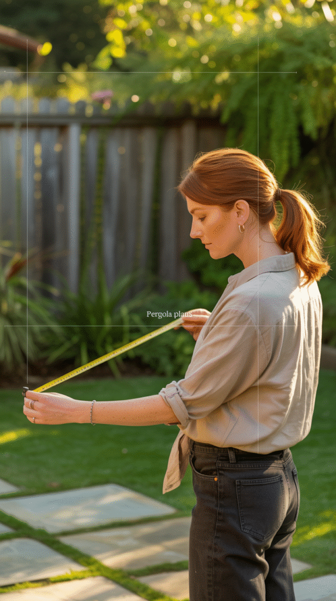
7. Why a Pergola Changes a Backyard
A pergola gives an otherwise open yard a defined destination, a specific spot that reads as a room, not just more lawn.
This structure alone does more to make a backyard feel like an extension of the house than almost any other single addition.
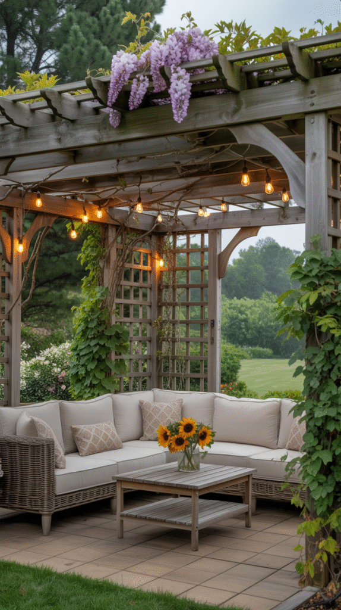
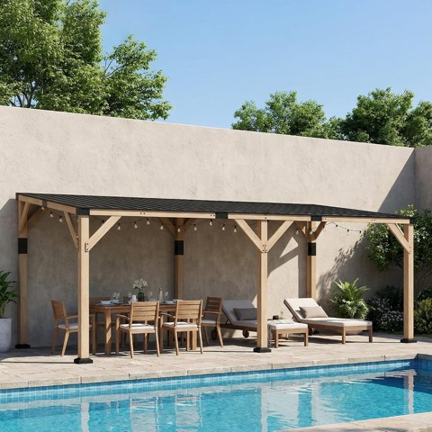
Outsunny 10 x 20 Ft Wooden Gazebo Hardtop Lean-to for Patio, Light Walnut
Shop on AmazonYour Pergola, Your Vibe
A pergola only becomes a real outdoor room once the practical layer, seating, weatherproofing, upkeep, gets the same attention as the styling.
Get those right, and the structure stops being a backyard feature and starts being a room people actually want to spend time in.